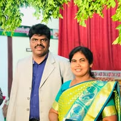
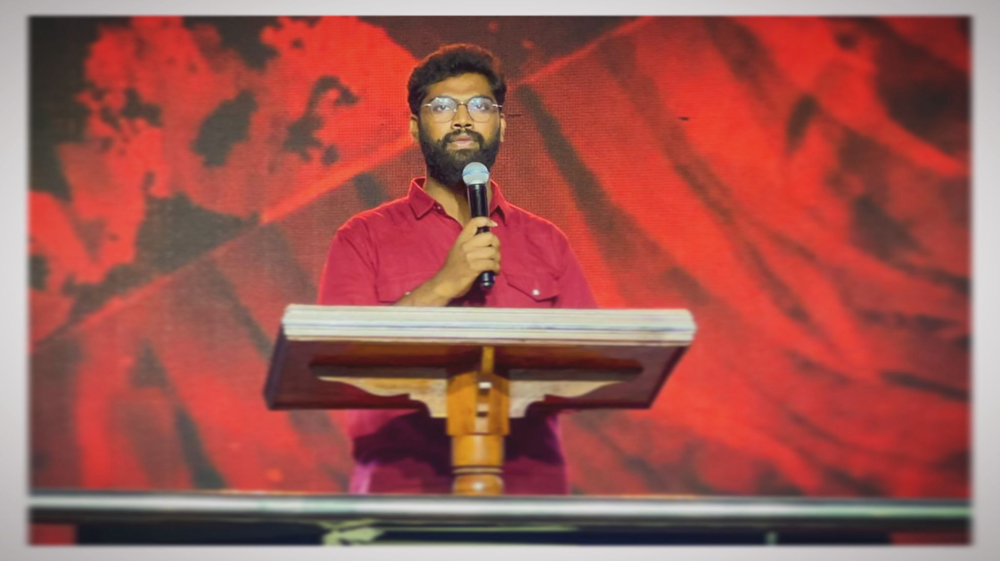
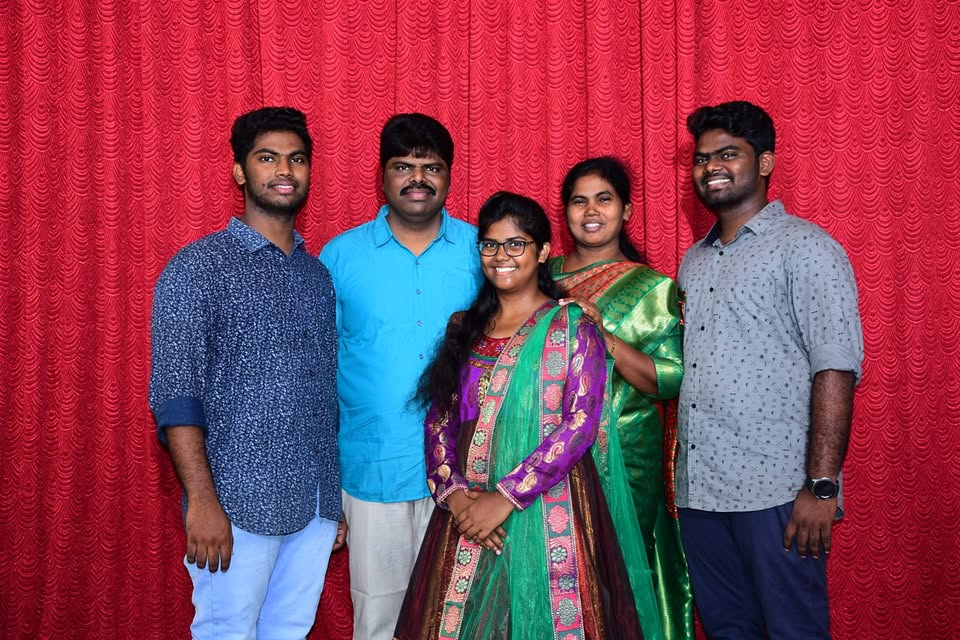
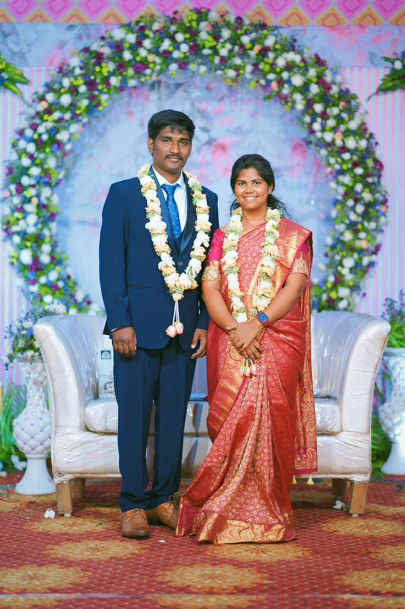
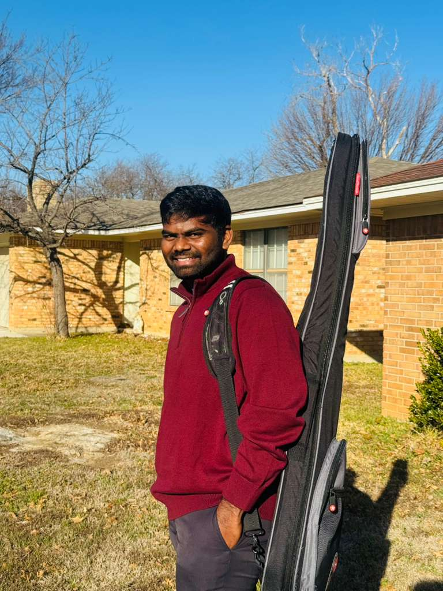

A village church that started with one man's obedience and has kept praying for more than 30 years.ఒక వ్యక్తి విధేయతతో మొదలై, 30 సంవత్సరాలకు పైగా ప్రార్థిస్తూ ఉన్న ఒక గ్రామ సంఘం.
Holy Spirit Prayer House (IPC) is a church in Oduru, West Godavari, Andhra Pradesh. Bishop P. Moses started it in 1995 and still leads it today. హోలీ స్పిరిట్ ప్రార్థన మందిరం (IPC) ఆంధ్రప్రదేశ్, పశ్చిమ గోదావరి జిల్లా ఓడూరులో ఉన్న సంఘం. బిషప్ పి. మోషే గారు 1995లో దీనిని ప్రారంభించారు, ఈ రోజు కూడా నడిపిస్తున్నారు.
Our Pentecostal heritage runs through generations: Bishop P. Moses's mother, Pastor Esthar, served as a pastor in the Indian Pentecostal Church (IPC) under Apostle P.L. Paramjyothi. Following in her footsteps, Bishop P. Moses serves in the Indian Pentecostal Church (IPC) under Bishop Samuel Finny. మా పెంతెకొస్తు వారసత్వం తరతరాలుగా కొనసాగుతోంది: బిషప్ పి. మోషే గారి తల్లి, పాస్టర్ ఎస్తేరు గారు, అపొస్తలుడు పి.ఎల్. పరంజ్యోతి గారి ఆధ్వర్యంలో ఇండియన్ పెంతెకొస్తు చర్చి (IPC) లో పాస్టర్గా సేవ చేశారు. ఆమె అడుగుజాడల్లో, బిషప్ పి. మోషే గారు బిషప్ శామ్యూల్ ఫిన్నీ గారి ఆధ్వర్యంలో ఇండియన్ పెంతెకొస్తు చర్చి (IPC) లో సేవ చేస్తున్నారు.
That was more than 30 years ago. Since then we have kept doing the same simple things: praying, worshipping, preaching in the villages and caring for children who have no one. అది 30 సంవత్సరాల క్రితం. అప్పటి నుండి అవే సాధారణ పనులు చేస్తూ ఉన్నాం: ప్రార్థన, ఆరాధన, గ్రామాల్లో సువార్త, ఎవరూ లేని పిల్లల సంరక్షణ.
Visit Usసందర్శించండి"Repent, and be baptized every one of you in the name of Jesus Christ for the remission of sins, and ye shall receive the gift of the Holy Ghost." "మీరు పశ్చాత్తాపపడినవారై, మీ పాపముల క్షమాపణ కొరకు యేసుక్రీస్తునామములో బాప్తిస్మము పొందుడి; అప్పుడు మీరు పరిశుద్ధాత్మా అనుగ్రహమును పొందుదురు."
Acts 2:38అపొస్తలుల కార్యములు 2:38
To tell everyone we can about God the Father, His Son Jesus Christ and the Holy Spirit, and to pray with them.తండ్రియైన దేవుని, ఆయన కుమారుడైన యేసుక్రీస్తును, పరిశుద్ధాత్మను మేము చేరగలిగిన ప్రతి ఒక్కరికి తెలియజేయడం, వారితో కలిసి ప్రార్థించడం.
A church in every village around us where the poor, the orphan and the lost are welcomed and hear the gospel.మా చుట్టూ ఉన్న ప్రతి గ్రామంలో పేదలు, అనాథలు, దారి తప్పినవారు ఆహ్వానించబడి సువార్త వినే ఒక సంఘం.

Bishop P. Moses started Holy Spirit Prayer House (IPC) in 1995. He leads the church, he founded the Mary House of Compassion Trust children's home, and he still preaches in Oduru and the villages around it.బిషప్ పి. మోషే గారు 1995లో హోలీ స్పిరిట్ ప్రార్థన మందిరాన్ని ప్రారంభించారు. సంఘాన్ని నడిపిస్తున్నారు, మేరీ హౌస్ ఆఫ్ కంపాషన్ ట్రస్ట్ పిల్లల ఇంటిని స్థాపించారు, ఈ రోజు కూడా ఓడూరులో, చుట్టుపక్కల గ్రామాల్లో వాక్యం బోధిస్తున్నారు.
📞 +91 98483 15170
Bishop P. Moses's second son and co-founder of the church. Bro. Billygraham preaches, works with the young people and goes out with the gospel to the villages.బిషప్ పి. మోషే గారి రెండవ కుమారుడు, సంఘ సహ-స్థాపకుడు. బ్రదర్ బిలీగ్రాహం వాక్యం బోధిస్తారు, యువతతో పని చేస్తారు, గ్రామాలకు సువార్త తీసుకువెళ్తారు.
📞 +91 98663 78567The story starts before the church, with a mother who couldn't stop crying and a stranger who told her about Jesus. ఈ కథ సంఘం కంటే ముందే మొదలైంది: ఏడుస్తున్న ఒక తల్లి, ఆమెకు యేసు గురించి చెప్పిన ఒక అపరిచితుడు.
Bishop P. Moses was born into a family that did not know Jesus. His mother Esther was from Palakol. For years she had no children, and in those days people blamed and shamed a woman for that. She tried everything and nothing helped. One day she was crying on the street when a stranger stopped and told her about Jesus Christ. బిషప్ పి. మోషే గారు యేసును ఎరుగని కుటుంబంలో జన్మించారు. ఆయన తల్లి ఎస్తేర్ గారు పాలకోల్కు చెందినవారు. చాలా సంవత్సరాలు ఆమెకు పిల్లలు లేరు, ఆ రోజుల్లో దానికి స్త్రీనే నిందించేవారు. ఆమె అన్నీ ప్రయత్నించింది, ఏదీ పని చేయలేదు. ఒక రోజు ఆమె వీధిలో ఏడుస్తుండగా ఒక అపరిచిత వ్యక్తి ఆగి యేసుక్రీస్తు గురించి చెప్పాడు.
"Believe in Jesus Christ. He will do a miracle." "యేసుక్రీస్తుపై విశ్వాసముంచండి. ఆయన అద్భుతం చేస్తాడు."
She had tried everything else, so she believed. By God's grace a baby girl was born, and five years later a second daughter. People still talked. No son, they said, so the family name would end. Esther kept praying. మిగతావన్నీ ప్రయత్నించిన ఎస్తేర్ గారు నమ్మారు. దేవుని కృపచే ఒక కుమార్తె పుట్టింది, ఐదు సంవత్సరాల తర్వాత మరొక కుమార్తె. అయినా ప్రజలు మాట్లాడుకున్నారు: కుమారుడు లేడు, కుటుంబ పేరు ఆగిపోతుంది అని. ఎస్తేర్ గారు ప్రార్థిస్తూనే ఉన్నారు.
God answered her. A baby boy was born, Palaparthy Moses. Three years later came a fourth child, another son, Palaparthy Rajubabu. People had said it couldn't happen, and God did it. దేవుడు ఆమెకు జవాబిచ్చాడు. ఒక మగబిడ్డ పుట్టాడు, పాలపర్తి మోషే. మూడు సంవత్సరాల తర్వాత నాలుగవ సంతానంగా మరొక కుమారుడు, పాలపర్తి రాజుబాబు. జరగదు అని ప్రజలు అన్నది దేవుడు చేశాడు.
After her husband died, Esther went back to her mother's place and began to do God's work. Many people criticised her at first. But she kept telling what God had done for her, and one by one people believed.More than 2,000 people were baptisedafter hearing Esther's testimony. భర్త చనిపోయిన తర్వాత ఎస్తేర్ గారు తల్లి ఇంటికి వెళ్ళి దేవుని పని మొదలుపెట్టారు. మొదట చాలామంది విమర్శించారు. కానీ దేవుడు తనకు చేసినదాన్ని ఆమె చెబుతూనే ఉన్నారు, ఒక్కొక్కరుగా ప్రజలు నమ్మారు.2,000 కంటే ఎక్కువ మందిఎస్తేర్ గారి సాక్ష్యం విని బాప్తిస్మం పొందారు.
Moses trained in the Bible. After he married Mary Kumari he moved from Poduru to Oduru. One day, on a bus, God spoke to him clearly: మోషే గారు బైబిల్ శిక్షణ పొందారు. మేరీ కుమారి గారిని పెళ్ళి చేసుకున్న తర్వాత పోడూరు నుండి ఓడూరుకు వచ్చారు. ఒక రోజు బస్సులో ప్రయాణిస్తుండగా దేవుడు ఆయనతో స్పష్టంగా మాట్లాడాడు:
"Go and preach the gospel in this place, Brahma Cheruvu." "నువ్వు ఈ స్థలానికి, బ్రహ్మ చెరువుకు, వెళ్ళి సువార్త చెప్పాలి."
Brahma Cheruvu was known for drinking, smoking, witchcraft and black magic. Most people would have stayed away. Moses went. He preached there, and slowly, one person at a time, people began to believe and the village changed. Holy Spirit Prayer House (IPC) grew out of that day on the bus. బ్రహ్మ చెరువు తాగుడు, పొగ, చేతబడి, మంత్రాలకు పేరుపొందిన గ్రామం. చాలామంది అక్కడికి వెళ్ళరు. మోషే గారు వెళ్ళారు. అక్కడ వాక్యం బోధించారు. మెల్లగా, ఒక్కొక్కరుగా ప్రజలు నమ్మారు, గ్రామం మారింది. బస్సులో జరిగిన ఆ రోజు నుండే హోలీ స్పిరిట్ ప్రార్థన మందిరం (IPC) ఎదిగింది.
Bishop P. Moses's family has served alongside him from the start. బిషప్ పి. మోషే గారి కుటుంబం మొదటి నుండి ఆయనతో కలిసి సేవ చేస్తోంది.
Mary Kumari served beside Bishop P. Moses for more than 30 years. She was a mother to her children and to many in the church, and she prayed for this house every day. We miss her. మేరీ కుమారి గారు 30 సంవత్సరాలకు పైగా బిషప్ పి. మోషే గారి పక్కన సేవ చేశారు. తన పిల్లలకే కాదు, సంఘంలో చాలామందికి తల్లిలా ఉన్నారు. ఈ మందిరం కొరకు ప్రతి రోజు ప్రార్థించారు. ఆమెను మేము మరచిపోలేము.
"Precious in the sight of the LORD is the death of his saints."Psalm 116:15


Married, with a little daughter. She leads worship in the church, and Bishop Moses is a happy grandfather. వివాహమైంది, ఒక చిన్న కుమార్తె ఉంది. సంఘంలో ఆరాధన నడిపిస్తారు. బిషప్ మోషే గారు సంతోషంగా ఉన్న తాత.

Lives in the United States and stays close to the church from there. అమెరికాలో నివసిస్తున్నారు, అక్కడి నుండి సంఘంతో దగ్గరగా ఉంటారు.
Co-founder of Holy Spirit Prayer House (IPC). He preaches, works with the young people and carries on his father's work in the villages. హోలీ స్పిరిట్ ప్రార్థన మందిరం (IPC) సహ-స్థాపకుడు. వాక్యం బోధిస్తారు, యువతతో పని చేస్తారు, గ్రామాల్లో తండ్రి గారి పనిని కొనసాగిస్తున్నారు.
📞 +91 98663 78567You are welcome at Holy Spirit Prayer House (IPC). Come as you are. You don't need to know anyone.హోలీ స్పిరిట్ ప్రార్థన మందిరానికి మీకు స్వాగతం. మీరు ఉన్నట్లే రండి. ఎవరినీ తెలియకపోయినా పర్వాలేదు.